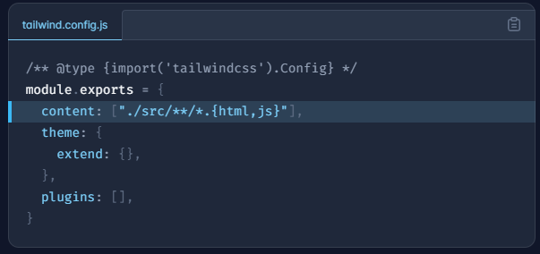
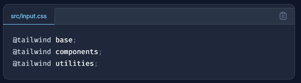
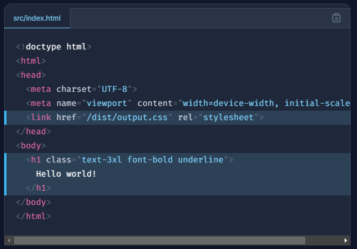

Today I will be using Tailwind as the framework.
To use it simply include https://cdn.tailwindcss.com as a src in script

or you can visit the Tailwind Website from this link
To start of I wrote some basic code like this and tested if tailwind was working by using text-sky-200

Next I started working on the contents of the page mostly text explaining each step/planning for it
Then I visited the Tailwind Documents Website to learn and apply styling to my page
you can also install Tailwind CSS using these simple steps:
In the treminal Install tailwindcss via npm, and create your tailwind.config.js file.
 Add the paths to all of your template files in your tailwind.config.js file.
Add the paths to all of your template files in your tailwind.config.js file.

Add the @tailwind directives for each of Tailwind’s layers to your main CSS file.

Run the CLI tool to scan your template files for classes and build your CSS.
 Add your compiled CSS file to the and start using Tailwind’s utility classes to style your content.
Add your compiled CSS file to the and start using Tailwind’s utility classes to style your content.

and started applying styling to my webpage
The main difficulties encountered were really just choosing the framework and website to host my webpage
which was solved by github, being an already trusted site by me and
for picking the framework, I trusted fireship(a youtube channel)
specifically these two videos tailwind in 100 seconds and
tailwind CSS is the worst..
followed by a little bit more research online.
Tailwind itself was quite similar to Bootstrap as such i encountered very little problems
However the only big problem i encountered in tailwind itself was Choosing the color itself,
which was solved by spending some time in the documentation and some experimentation
As for styling i wanted to keep it simple so i used grid system, aligned everthing including
text in the middle and picked a blue themed background and text color given tailwind logo is blue
I used colouns in the installation part with 3 on first row and 2 on second to make it look better
and not put everthing in the middle. i also added some margins.
Thank you for visiting my website, I hope you have a lovely day ahead!!